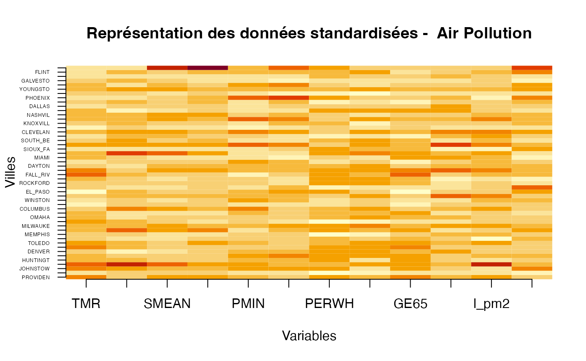
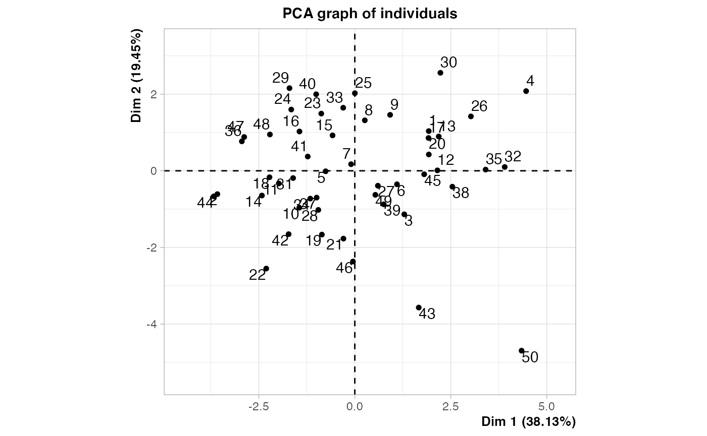
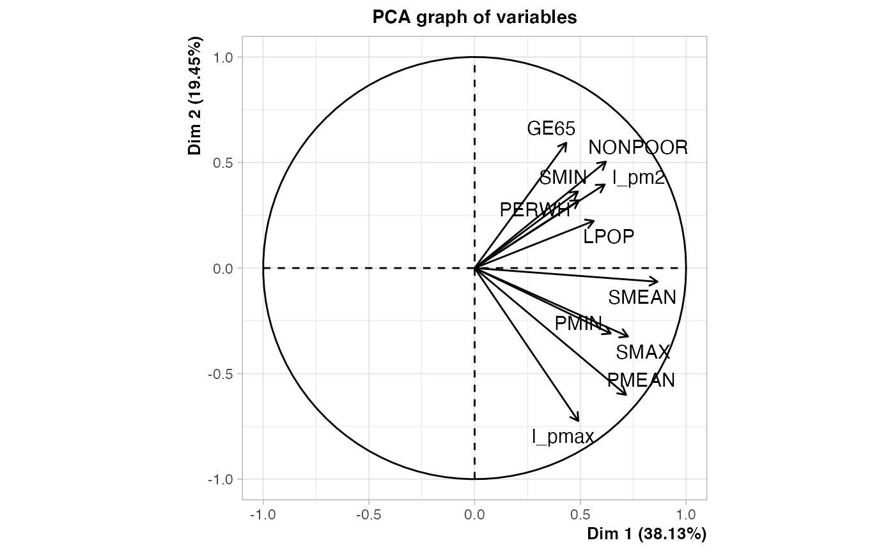

Chapitre 04. Exploration de données avec l’analyse en composantes principales.
Tout le code avec R.
Christian Derquenne
2021-07-28
Source:vignettes/CodeChap04.Rmd
CodeChap04.Rmd

|
|
Description des données
Échantillon de 50 villes (individus) tirées aléatoirement sur la pollution de l’air aux États-Unis en 1960
-
TMR: taux de mortalité exprimé en 1/10000 -
GE65: pourcentage (multiplié par 10) de la population des 65 ans et plus -
LPOP: logarithme (en base 10 et multiplié par 10) de la population -
NONPOOR: pourcentage de ménages avec un revenu au dessus du seuil de pauvreté -
PERWH: pourcentage de population blanche -
PMEAN: moyenne arithmétique des relevés réalisés deux fois par semaine de particules suspendues dans l’air (micro-g/m3 multiplié par 10) -
PMIN: plus petite valeur des relevés réalisés deux fois par semaine de particules suspendues dans l’air (micro-g/m3 multiplié par 10) -
LPMAX: logarithme de la plus grande valeur des relevés réalisés deux fois par semaine de particules suspendues dans l’air (micro-g/m3 multiplié par 10) -
SMEAN: moyenne arithmétique des relevés réalisés deux fois par semaine de sulfate (micro-g/m3 multiplié par 10) -
SMIN: plus petite valeur des relevés réalisés deux fois par semaine de sulfate (micro-g/m3 multiplié par 10) -
SMAX: plus grande valeur des relevés réalisés deux fois par semaine de sulfate (micro-g/m3 multiplié par 10) -
LPM2: logarithme de la densité de la population par mile carré (multiplié par 0,1)
Lecture des données
Élimine les variables PM2 et PMAX qui sont transformées en logarithme dans les variables l_pm2 et l_pmax.
air_pollution <- air_pollution[,-(8:9)]Quelques statistiques descriptives du fichier de données
summary(air_pollution)
#> CITY TMR SMIN SMEAN
#> JACKSON : 2 Min. : 618.0 Min. : 1.00 Min. : 27.00
#> AUGUSTA : 1 1st Qu.: 806.5 1st Qu.: 27.25 1st Qu.: 62.25
#> AUSTIN : 1 Median : 882.5 Median : 43.50 Median : 79.50
#> BEAUMONT: 1 Mean : 893.9 Mean : 47.36 Mean : 98.18
#> BOSTON : 1 3rd Qu.: 955.2 3rd Qu.: 62.00 3rd Qu.:132.50
#> BRIDGEPO: 1 Max. :1199.0 Max. :155.00 Max. :283.00
#> (Other) :43
#> SMAX PMIN PMEAN PERWH
#> Min. : 58.0 Min. :10.00 Min. : 54.00 Min. :60.00
#> 1st Qu.:139.5 1st Qu.:29.75 1st Qu.: 90.25 1st Qu.:83.03
#> Median :194.5 Median :46.00 Median :121.00 Median :90.65
#> Mean :220.0 Mean :46.86 Mean :122.48 Mean :87.50
#> 3rd Qu.:265.2 3rd Qu.:57.50 3rd Qu.:147.00 3rd Qu.:95.08
#> Max. :940.0 Max. :98.00 Max. :247.00 Max. :99.30
#>
#> NONPOOR GE65 LPOP l_pm2
#> Min. :67.80 Min. : 45.00 Min. :4.937 Min. :1.808
#> 1st Qu.:76.58 1st Qu.: 70.25 1st Qu.:5.384 1st Qu.:3.251
#> Median :82.65 Median : 81.50 Median :5.570 Median :3.637
#> Mean :81.57 Mean : 81.32 Mean :5.639 Mean :3.814
#> 3rd Qu.:87.10 3rd Qu.: 93.75 3rd Qu.:5.831 3rd Qu.:4.398
#> Max. :90.70 Max. :116.00 Max. :6.794 Max. :7.213
#>
#> l_pmax
#> Min. :4.820
#> 1st Qu.:5.247
#> Median :5.489
#> Mean :5.521
#> 3rd Qu.:5.777
#> Max. :6.865
#> Exercice 4.1 : Analyse visuelle des données
Standardisation des données.
air_pollution_std <- scale(air_pollution[,-1])Affichage graphique du tableau de données sans la variable CITY qui est en première colonne.
z <- t(as.matrix(air_pollution_std))
x <- seq(1,12,length.out=12)
y <- seq(1,50,length.out=50)
rownames(z) <- c("TMR","SMIN","SMEAN","SMAX","PMIN","PMEAN","PERWH","NONPOOR","GE65","LPOP","l_pm2","l_pmax")
colnames(z) <- air_pollution$CITY
image(x,y,z,xlab="Variables",ylab="Villes",main="Représentation des données standardisées - Air Pollution",axes=FALSE)
axis(1, at = x,labels = rownames(z),las=1,cex.axis=1)
axis(2, at = y,labels = colnames(z),las=2,cex.axis=0.4)
Exercice 4.2 : Analyse des corrélations entre les variables
GGally::ggpairs(air_pollution[,-1], progress=FALSE)
#> Registered S3 method overwritten by 'GGally':
#> method from
#> +.gg ggplot2
cor_pollution <- cor(air_pollution[,-1])
col1 <- colorRampPalette(c("#7F0000", "red", "#FF7F00", "yellow", "white", "cyan", "#007FFF", "blue", "#00007F"))
col2 <- colorRampPalette(c("#67001F", "#B2182B", "#D6604D", "#F4A582", "#FDDBC7", "#FFFFFF", "#D1E5F0", "#92C5DE", "#4393C3", "#2166AC", "#053061"))
col3 <- colorRampPalette(c("red", "white", "blue"))
col4 <- colorRampPalette(c("#7F0000", "red", "#FF7F00", "yellow", "#7FFF7F", "cyan", "#007FFF", "blue", "#00007F"))
whiteblack <- c("white", "black")
corrplot::corrplot(cor_pollution, method = "color", addrect = 2, col = col1(100))
Exercice 4.3 : Analyse des inerties expliquées et résiduelles
library(FactoMineR)
res.PCA <- PCA(air_pollution[,-(1:2)])
summary(res.PCA)
#>
#> Call:
#> PCA(X = air_pollution[, -(1:2)])
#>
#>
#> Eigenvalues
#> Dim.1 Dim.2 Dim.3 Dim.4 Dim.5 Dim.6 Dim.7
#> Variance 4.194 2.139 1.509 1.159 0.629 0.433 0.386
#> % of var. 38.128 19.448 13.715 10.532 5.718 3.933 3.508
#> Cumulative % of var. 38.128 57.576 71.292 81.823 87.542 91.475 94.983
#> Dim.8 Dim.9 Dim.10 Dim.11
#> Variance 0.287 0.144 0.064 0.057
#> % of var. 2.606 1.310 0.586 0.516
#> Cumulative % of var. 97.589 98.898 99.484 100.000
#>
#> Individuals (the 10 first)
#> Dist Dim.1 ctr cos2 Dim.2 ctr cos2 Dim.3 ctr
#> 1 | 2.847 | 1.926 1.768 0.458 | 1.036 1.003 0.132 | 0.569 0.430
#> 2 | 4.398 | -3.580 6.113 0.663 | -0.609 0.347 0.019 | -1.863 4.601
#> 3 | 3.483 | 1.289 0.792 0.137 | -1.136 1.206 0.106 | 1.368 2.481
#> 4 | 5.875 | 4.463 9.499 0.577 | 2.080 4.044 0.125 | -2.075 5.709
#> 5 | 2.344 | -0.760 0.276 0.105 | -0.013 0.000 0.000 | 1.041 1.435
#> 6 | 2.458 | 1.098 0.575 0.200 | -0.353 0.116 0.021 | 1.566 3.251
#> 7 | 2.296 | -0.097 0.004 0.002 | 0.172 0.028 0.006 | 1.163 1.793
#> 8 | 2.422 | 0.261 0.032 0.012 | 1.317 1.622 0.296 | 1.796 4.274
#> 9 | 2.073 | 0.920 0.403 0.197 | 1.460 1.993 0.496 | -0.137 0.025
#> 10 | 2.702 | -1.447 0.999 0.287 | -0.963 0.867 0.127 | 1.748 4.052
#> cos2
#> 1 0.040 |
#> 2 0.179 |
#> 3 0.154 |
#> 4 0.125 |
#> 5 0.197 |
#> 6 0.406 |
#> 7 0.257 |
#> 8 0.549 |
#> 9 0.004 |
#> 10 0.419 |
#>
#> Variables (the 10 first)
#> Dim.1 ctr cos2 Dim.2 ctr cos2 Dim.3 ctr cos2
#> SMIN | 0.489 5.694 0.239 | 0.363 6.159 0.132 | -0.334 7.387 0.111 |
#> SMEAN | 0.865 17.836 0.748 | -0.065 0.196 0.004 | -0.212 2.968 0.045 |
#> SMAX | 0.725 12.545 0.526 | -0.324 4.911 0.105 | 0.040 0.107 0.002 |
#> PMIN | 0.644 9.888 0.415 | -0.310 4.493 0.096 | -0.117 0.913 0.014 |
#> PMEAN | 0.716 12.225 0.513 | -0.601 16.865 0.361 | 0.155 1.599 0.024 |
#> PERWH | 0.494 5.813 0.244 | 0.321 4.824 0.103 | 0.746 36.855 0.556 |
#> NONPOOR | 0.621 9.195 0.386 | 0.504 11.878 0.254 | 0.239 3.793 0.057 |
#> GE65 | 0.434 4.481 0.188 | 0.594 16.484 0.353 | 0.461 14.092 0.213 |
#> LPOP | 0.564 7.578 0.318 | 0.223 2.333 0.050 | -0.325 7.008 0.106 |
#> l_pm2 | 0.615 9.015 0.378 | 0.396 7.331 0.157 | -0.580 22.270 0.336 |Exercice 4.4 : Contributions et reconstitutions des variables sur la première composante principale
res.PCA
#> **Results for the Principal Component Analysis (PCA)**
#> The analysis was performed on 50 individuals, described by 11 variables
#> *The results are available in the following objects:
#>
#> name description
#> 1 "$eig" "eigenvalues"
#> 2 "$var" "results for the variables"
#> 3 "$var$coord" "coord. for the variables"
#> 4 "$var$cor" "correlations variables - dimensions"
#> 5 "$var$cos2" "cos2 for the variables"
#> 6 "$var$contrib" "contributions of the variables"
#> 7 "$ind" "results for the individuals"
#> 8 "$ind$coord" "coord. for the individuals"
#> 9 "$ind$cos2" "cos2 for the individuals"
#> 10 "$ind$contrib" "contributions of the individuals"
#> 11 "$call" "summary statistics"
#> 12 "$call$centre" "mean of the variables"
#> 13 "$call$ecart.type" "standard error of the variables"
#> 14 "$call$row.w" "weights for the individuals"
#> 15 "$call$col.w" "weights for the variables"fournit la liste des informations disponibles.
- name description
- “$eig” “eigenvalues”
- “$var” “results for the variables”
- “\(var\)coord” “coord. for the variables”
- “\(var\)cor” “correlations variables - dimensions”
- “\(var\)cos2” “cos2 for the variables”
- “\(var\)contrib” “contributions of the variables”
- “$ind” “results for the individuals”
- “\(ind\)coord” “coord. for the individuals”
- “\(ind\)cos2” “cos2 for the individuals”
- “\(ind\)contrib” “contributions of the individuals”
- “$call” “summary statistics”
- “\(call\)centre” “mean of the variables”
- “\(call\)ecart.type” “standard error of the variables”
- “\(call\)row.w” “weights for the individuals”
- “\(call\)col.w” “weights for the variables”
contrib_dim_1 <- round(res.PCA$var$contrib[,1],2)
cos2_dim_1 <- round(res.PCA$var$cos2[,1]*100,2)
contrib_cos2_var_dim_1 <- data.frame(contrib_dim_1,cos2_dim_1)
contrib_cos2_var_dim_1
#> contrib_dim_1 cos2_dim_1
#> SMIN 5.69 23.88
#> SMEAN 17.84 74.81
#> SMAX 12.54 52.61
#> PMIN 9.89 41.47
#> PMEAN 12.23 51.27
#> PERWH 5.81 24.38
#> NONPOOR 9.20 38.57
#> GE65 4.48 18.79
#> LPOP 7.58 31.78
#> l_pm2 9.01 37.81
#> l_pmax 5.73 24.03Exercice 4.5 : Équation de la première composante principale
res.PCA$var$coord[,1]
#> SMIN SMEAN SMAX PMIN PMEAN PERWH NONPOOR GE65
#> 0.4886781 0.8649000 0.7253509 0.6439964 0.7160517 0.4937540 0.6210111 0.4335012
#> LPOP l_pm2 l_pmax
#> 0.5637713 0.6148864 0.4902501Exercice 4.6 : Contributions et reconstitutions des individus sur la première composante principale
CITY <- air_pollution$CITY
contrib_dim_1 <- round(res.PCA$ind$contrib[,1],2)
cos2_dim_1 <- round(res.PCA$ind$cos2[,1]*100,2)
contrib_cos2_ind_dim_1 <- data.frame(CITY,contrib_dim_1,cos2_dim_1)
contrib_cos2_ind_dim_1
#> CITY contrib_dim_1 cos2_dim_1
#> 1 PROVIDEN 1.77 45.75
#> 2 JACKSON 6.11 66.26
#> 3 JOHNSTOW 0.79 13.69
#> 4 JERSEY_C 9.50 57.71
#> 5 HUNTINGT 0.28 10.52
#> 6 DES_MOIN 0.57 19.96
#> 7 DENVER 0.00 0.18
#> 8 READING 0.03 1.16
#> 9 TOLEDO 0.40 19.68
#> 10 FRESNO 1.00 28.67
#> 11 MEMPHIS 1.87 35.49
#> 12 YORK 2.21 29.03
#> 13 MILWAUKE 2.28 69.49
#> 14 SAVANNAH 2.79 54.48
#> 15 OMAHA 0.16 10.36
#> 16 TOPEKA 0.99 26.13
#> 17 COLUMBUS 1.76 46.47
#> 18 BEAUMONT 2.35 76.59
#> 19 WINSTON 0.35 10.28
#> 20 DETROIT 1.77 34.98
#> 21 EL_PASO 0.04 1.18
#> 22 MACON 2.54 29.45
#> 23 ROCKFORD 0.36 13.29
#> 24 JACKSON 1.31 30.36
#> 25 FALL_RIV 0.00 0.00
#> 26 BOSTON 4.36 62.60
#> 27 DAYTON 0.17 13.41
#> 28 CHARLOTT 0.43 18.39
#> 29 MIAMI 1.38 28.68
#> 30 BRIDGEPO 2.37 27.38
#> 31 SIOUX_FA 1.23 22.45
#> 32 CHICAGO 7.27 67.69
#> 33 SOUTH_BE 0.04 1.69
#> 34 NORFOLK 0.64 16.92
#> 35 CLEVELAN 5.54 75.80
#> 36 AUSTIN 4.13 82.38
#> 37 KNOXVILL 0.47 22.04
#> 38 INDIANAP 3.08 59.90
#> 39 NASHVIL 0.27 13.83
#> 40 SEATTLE 0.48 9.08
#> 41 DALLAS 0.72 32.85
#> 42 MOBILE 1.42 33.65
#> 43 PHOENIX 1.32 11.12
#> 44 AUGUSTA 6.43 79.60
#> 45 YOUNGSTO 1.56 77.36
#> 46 CHATTANO 0.00 0.03
#> 47 GALVESTO 3.96 68.37
#> 48 FORT_WOR 2.33 62.38
#> 49 FLINT 0.14 5.91
#> 50 CHARLEST 9.00 32.58Exercice 4.7 : Cercle des corrélations
Le cercle des corrélations se situe dans la fenêtre graphique.
Exercice 4.8 : Analyse de la deuxième dimension
contrib_dim_2 <- round(res.PCA$var$contrib[,2],2)
cos2_dim_2 <- round(res.PCA$var$cos2[,2]*100,2)
contrib_cos2_var_dim_2 <- data.frame(contrib_dim_2,cos2_dim_2)
contrib_cos2_var_dim_2
#> contrib_dim_2 cos2_dim_2
#> SMIN 6.16 13.18
#> SMEAN 0.20 0.42
#> SMAX 4.91 10.51
#> PMIN 4.49 9.61
#> PMEAN 16.87 36.08
#> PERWH 4.82 10.32
#> NONPOOR 11.88 25.41
#> GE65 16.48 35.26
#> LPOP 2.33 4.99
#> l_pm2 7.33 15.68
#> l_pmax 24.53 52.47